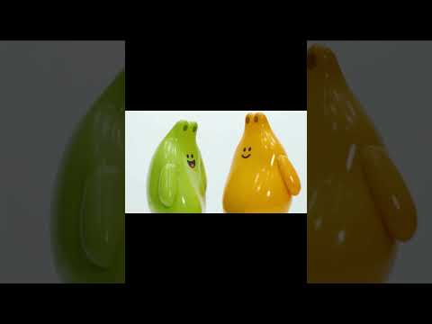
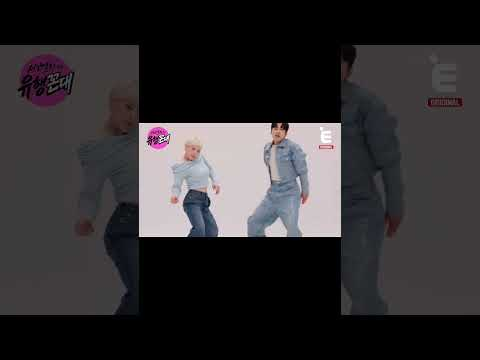

미혼 앤 비혼 (NEON 가사 잘못 들리기)
A2O LITE의 NEON 후렴이 "미혼 앤 비혼"으로 들린다는 말장난에서 시작해, 비슷하게 들리는 말로 바꿔 부르거나 유명인을 AI로 합성해 같은 춤을 추게 하는 영상으로 번졌다.
- 🎬
- A2O LITE의 NEON 후렴이 '미혼 앤 비혼'으로 들린다는 말장난에서 시작해, 비슷한 말로 바꿔 부르기와 유명인 AI 합성 댄스 영상으로 번진 밈.
- 🔥
- 일반 쇼츠 최고 105.9만 회·65.5만 회·57.2만 회(10/21), JTBC·YTN·연합뉴스TV가 소개(제목·설명 기준). 댓글 수는 확인 못 함, 공유 수는 유튜브가 공개하지 않음.
- 😂
- 공공기관: 부천문화재단 1곳(504회)만 찾음. 방송은 채널십오야·E채널·KBS·스브스 예능맛집. 인스타·틱톡은 확인 못 함.
기업 패러디 공공기관 우선 · 없으면 기업·방송·연예인·인플루언서

공공기관미혼앤비혼? 아니, 와글앤와글! 부천문화재단도 유행에 슬쩍 탑승해 보았습니다(제목 기준)유튜브 · 부천문화재단 · 2026-10-20조회 618 · 좋아요 4방송나영석 / 기혼 / 50세 (설명 '미혼앤기혼 #나영석 #토롱이 #neon')유튜브 · 채널십오야 · 2026-10-20조회 69만 · 좋아요 6,848 · 댓글 704
방송이혼앤미혼 챌린지 말아왔습니다 #서인영의유행꼰대 (제목 기준)유튜브 · 쇼츠 E채널 · 2026-10-19조회 9,703 · 좋아요 53 · 댓글 3방송NEON and BEYOND! 당신이 몰랐던 이세돌의 새로운 모습! 10월 23일 KBS2 첫 방송 [백수 이세돌] (NEON 가사 문구를 예고 제목에 차용)유튜브 · KBS 한국방송 · 2026-10-20조회 6,023 · 좋아요 20 · 댓글 3방송미혼앤 기혼 아재들의 결혼 훈수 #비서진 (제목에 문구만 차용한 예능 클립)유튜브 · 쇼츠 스브스 예능맛집 · 2026-10-16조회 22만 · 좋아요 479 · 댓글 98